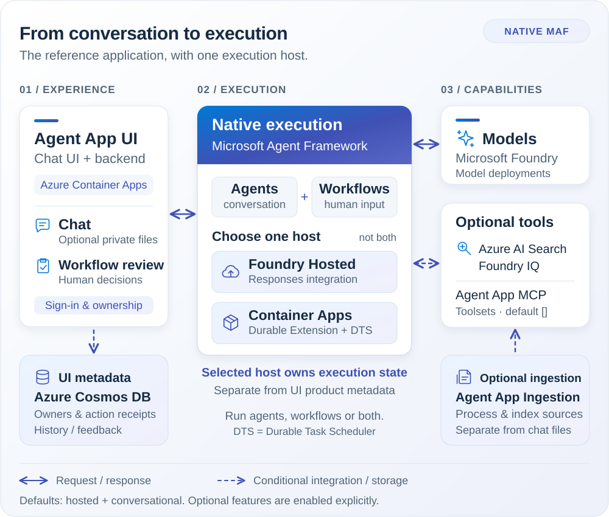

Agent Application
Agent Application is the reference application included with Agent Landing Zone. It brings together a chat and workflow interface, native Microsoft Agent Framework (MAF) execution, optional document processing and optional MCP tools. Use an Agent for conversation or a Workflow for a published process with human input.
Start with Get started: Deploy your first agent application for your first installation. The guides below explain how to configure, operate and extend it.
The reference application is one application on the reusable foundation, not the definition of that foundation. To deploy other components instead of the supplied UI/orchestrator, select your own application definition before provision. Application composition declares component names, tool selection and dependencies. The foundation accepts generic compute, data, capability and role inputs.
First time using Agent Application?
Follow Deploy your first agent application.
This Bicep guide uses the reference application, Hosted execution and
conversational mode. It creates a private standalone virtual network (VNet),
Azure Bastion and a jumpbox for initial access.
The guide includes deployment, sign-in, a task test, denied-access checks and a request trace. Add data sources and other capabilities after these checks pass.
For other deployment options, use the full-stack reference guide for Bicep or Terraform.
Before provision, register the UI application and arrange consent. After provision and before deploy, configure the actual UI callback, secrets and admission. The deployment guide marks that handoff explicitly.
The first task test does not prove document retrieval, SQL readiness, saved history or workflow recovery. The default application does not automatically know your organization's documents or databases.
How to configure an optional capability
- Choose the capability's guide below before the first provision, or before updating an existing installation. Check its resources, permissions and source preparation requirements.
- Use Application settings
to locate its supported input. History, feedback and private attachments
use
azd env setbefore provision. Agent capability keys are declared in the project-rootmain.parameters.json. - Complete the required provision and deploy steps, then sign in with a pilot user. Follow the capability's verification steps and check both a permitted operation and a denied one before inviting other users.
The lifecycle publishes the corresponding values to App Configuration. Keep deployment selection and runtime key edits in their documented surfaces.
Choose what to add next
| You want to | Follow | Important distinction |
|---|---|---|
| Ask about shared documents | Foundry IQ and source ingestion | Connect and authorize a source, enable its retrieval capability and check document allow/deny behavior |
| Ask about approved SQL data | Agent App MCP Server and NL2SQL walkthrough | Explicitly select the nl2sql toolset as well as the optional server, approve SQL read access and import metadata |
| Run a process with human review | Workflows & human input | Select workflow or both, publish the process and test both approval and rejection |
| Reopen saved conversations | Conversations & files | Native execution persistence is not the same as enabled UI history discovery |
| Collect ratings | User feedback | Feedback is independently enabled and has its own metadata and access requirements |
| Add private files to a conversation | Private attachments | Independently enabled, conversational only, bounded formats/sizes, not shared knowledge publication |
| Customize document processing | Agent App Ingestion | Deploy it only for a processing path that needs it |
| Add another channel or your own code | Chat & channels and Bring your own app | Each integration has its own identity, deployment and acceptance requirements |
How the components fit together


| Component | What it does |
|---|---|
| Agent App UI and backend for frontend (BFF) | Provides sign-in, chat/process presentation, owner mappings, product metadata and feedback. |
| Agent App Orchestrator | Runs native MAF Agents and Workflows, using the explicit integration for the selected host. |
| Agent App Ingestion | Provides optional application-managed document processing and indexing. |
| Agent App MCP Server | Extensible official Python SDK server in a separate Container App. Registers zero tools by default; ["nl2sql"] explicitly selects the supplied SQL toolset. |
Default deployment
By default, web chat runs in Azure Container Apps and the orchestrator runs
in Microsoft Foundry. The defaults are ORCHESTRATION_HOST=hosted and
APPLICATION_MODE=conversational. The UI is included automatically.
Search, Foundry IQ and multimodal tool flags default to off.
Agent App MCP Server is also omitted by default (DEPLOY_AGENT_APP_MCP=false).
When deployed, its MCP_TOOLSETS still defaults to []: no business tools
or NL2SQL dependencies are initialized until explicitly selected.
Preparing a source does not register a tool.
If a native Blob source is configured, Foundry IQ manages its ingestion. Deploy Agent App Ingestion only when a selected custom processing path needs it. Agent App Ingestion is disabled by default. A private conversation attachment is not a shared source-ingestion request.
History, feedback and private attachments also default to off. With these flags off in conversational mode, UI owner maps are bounded and volatile, not a restart-safe saved-session store. Native Hosted execution does not require application-owned Cosmos DB. Foundry backing resources and optional UI product storage are separate. Hosting owns native execution state. Hosting alone does not enable UI history discovery or feedback, or grant per-user document access.
Choose only the capabilities you need
| Your requirement | What to select | What is deployed or required |
|---|---|---|
| Web conversation | Default conversational mode and hosted host |
UI in Container Apps and a Foundry-hosted orchestrator; no application Cosmos without a storage consumer |
| A process with human review | workflow or both |
Native workflow execution plus Cosmos UI ownership/action metadata |
| Durable Container Apps execution | ORCHESTRATION_HOST=container_apps |
Native worker/client and Durable Task Scheduler instead of Hosted execution |
| Saved history, feedback or private chat files | The corresponding application feature | Application Cosmos for product metadata; private file bytes are not stored there |
| Authenticated MCP server without business tools | DEPLOY_AGENT_APP_MCP=true, MCP_TOOLSETS=[] |
Separate Container App and MCP authentication; no NL2SQL model, catalog or secret grants |
| Questions over approved SQL data | DEPLOY_AGENT_APP_MCP=true and MCP_TOOLSETS=["nl2sql"] |
MCP server plus application Cosmos catalog and model access; operator-approved SQL access and metadata import |
| Custom shared-document processing | DEPLOY_INGESTION_CONTAINER_APP=true |
Optional ingestion component and its selected source/index dependencies |
The platform handles resource dependencies and generated connections. You still choose the data sources, arrange authorization and provide approved content. For NL2SQL, SQL owners approve read-only database access. Operators import the approved catalog metadata. Search and document ingestion are independent capabilities.
What Cosmos means in this application
There are separate storage responsibilities:
- Application Cosmos is conditional. It is required automatically for
workflow/
bothUI ownership/action metadata. Enabling history, feedback or private attachments also requires application Cosmos for UI/product metadata. The selected NL2SQL toolset, retained catalogs and declared custom Cosmos capabilities require their respective application Cosmos dependencies. A compatible existing application account is reused, with separate containers and scoped grants for each consumer. - Foundry backing Cosmos belongs to Foundry's service infrastructure. It is not the application catalog or UI database.
- Native execution state belongs to the selected host: Foundry persistence for Hosted, or Durable Task Scheduler for Container Apps. UI Cosmos is not a workflow checkpoint store.
You may also select generic application Cosmos with DEPLOY_COSMOS_DB=true
without MCP or the reference orchestrator, including for a custom application.
See Application Cosmos DB.
Use Bring your own app to declare a separate
application and its resource consumers.
Application mode and host
APPLICATION_MODE selects conversational, workflow or both.
Independently, ORCHESTRATION_HOST selects hosted or container_apps.
These are deployment choices, not a user-facing runtime strategy or host picker.
History, feedback and private attachments are independent, default-off
features. Set their supported azd inputs
before provisioning.
Workflow mode and both always require UI metadata, even with every product
flag off.
Selecting Hosted alone does not enable history.
Hosted uses the official Responses integration and native persistence. Container Apps uses the official Durable Extension worker/client and Durable Task Scheduler. When both experiences use Hosted, conversation and workflow are published as separate applications with separate endpoints. See Agent hosting and Workflows & human input.
The application repositories contain the code. These guides are the shared documentation for the application components. The release manifest records their compatible versions.
Before you invite users
Complete the sign-in and access setup and check both allowed and denied access. Configure the sources you need and verify per-user document access. Deployment creates the selected resources. Signing in or connecting a source does not by itself prove document authorization.
Check the prerequisites for each selected capability:
- If you enable saved history or feedback, configure that feature's UI metadata and access requirements. Both features default to off.
- If you select a workflow, verify its declared UI metadata storage. This storage is independent of native execution state.
- If you enable private attachments, verify the explicit feature gate and retention requirements. Attachments use an owner-bound inline native input path and are conversational only. Transport support does not prove model PDF/image understanding.
Additional channels and external tools have separate integration requirements. For NL2SQL, complete MCP source onboarding. Have the SQL owner authorize a read-only database principal. Import approved metadata and verify known results and denied access. A deployed or authenticated MCP container does not prove that the NL2SQL catalog is initialized.
Find your guide
Agents
Choose where execution runs, configure agents and prompts, operate workflows and human input, or connect tools and MCP servers. A tool lets an agent perform an operation. Retrieval supplies information for its answer. For the optional tool server, start with Agent App MCP Server to understand deployment, automatic configuration and operator responsibilities. Its current NL2SQL tools have their own SQL onboarding procedure.
Chat & channels
Configure sign-in and access, conversations and files, and user feedback. For opt-in Chainlit presentations, see Inline visuals: cards, typed tables and source-backed charts, off by default. To reach users elsewhere, embed chat in a portal, publish to Teams and Microsoft 365, or connect Copilot Studio. These channels have different identity and network requirements. They do not all use the web chat's session or sign-in flow.
Knowledge & retrieval
Retrieval finds relevant information from your connected sources so that the agent can use it in an answer. Start with Foundry IQ, then follow the guide for Work IQ, Fabric IQ, SharePoint or structured data and NL2SQL. These guides explain the available integration paths and their prerequisites.
Document ingestion
Decide when you need the ingestion service, check document formats and image processing, and configure jobs and schedules. Preparing a shared document collection is not private conversation input. Shared ingestion does not enable private uploads. Processing images inside a shared document also does not imply direct image or voice chat input.
Operations
Change application settings, use the administrative panels, and review monitoring and audit events. For failures, use Troubleshooting.
Native Foundry and Agent Framework tracing is already integrated. Follow Set up trace export to verify Application Insights and find a request in Foundry. Message-content capture is a separate, default-off privacy choice.
AgentOps
Use the AgentOps Accelerator to evaluate, ship and operate your workload on Agent Landing Zone.
Development & customization
Run the components locally, customize their behavior, consult the API reference, and run the tests and quality checks. To replace the reference application, follow Bring your own app.
Know what you are changing
Deployment settings select resources, networking and which components are
deployed. They belong in the deployment configuration.
Application settings control runtime behavior and normally live in Azure
App Configuration under the agent-lz label.
Application settings explains how to change them
and when a reload or restart is required.
Keep deployment and redeployment steps in the deployment guide. Do not run deployment hooks merely to inspect a configuration value or execute a local test.